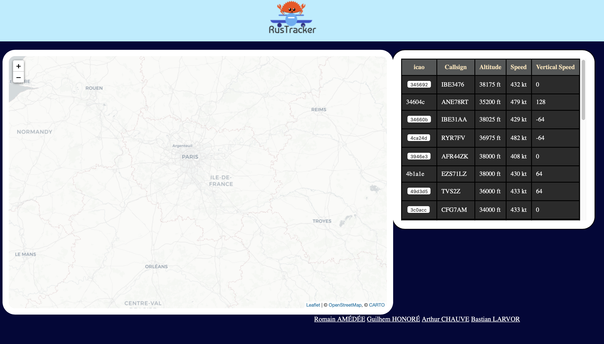
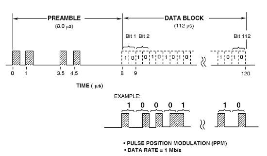
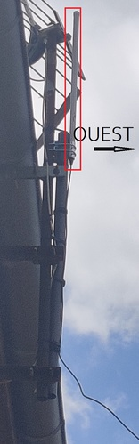
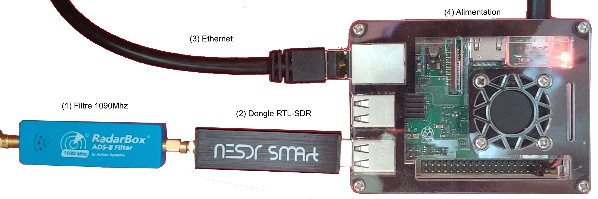
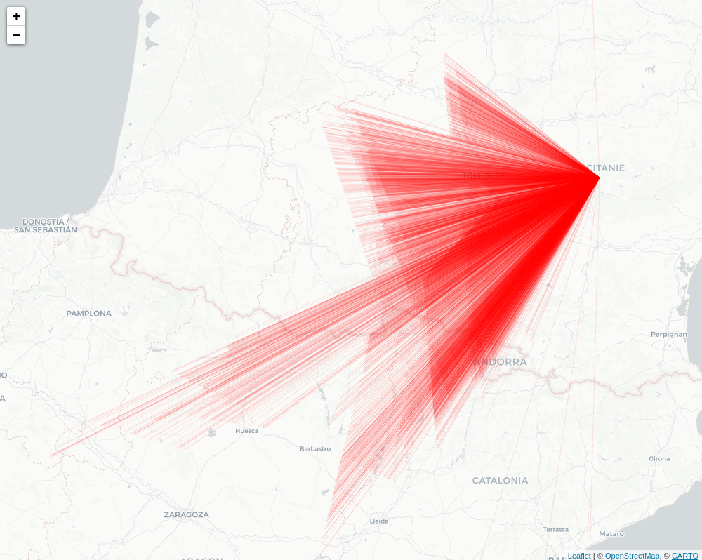
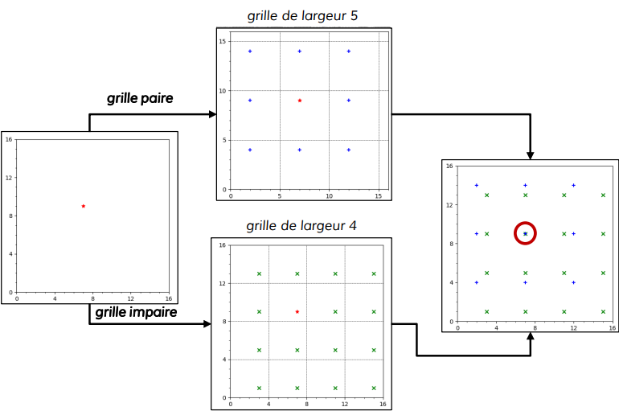
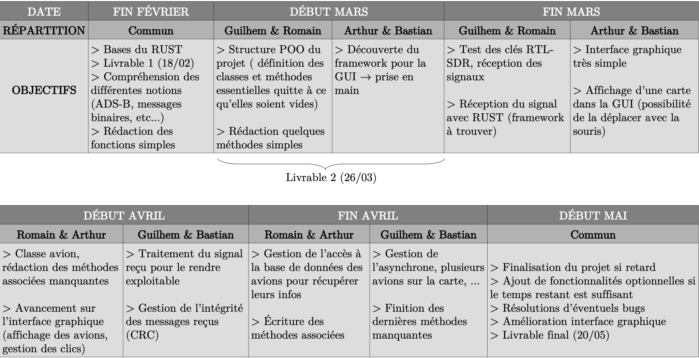

Introduction
L’ADS-B (Automatic Dependent Surveillance-Broadcast) est un système de contrôle du trafic aérien. Un avion utilisant l’ADS-B détermine sa position par un système de positionnement satellite et renvoie cette dernière (ainsi que d’autres informations sur le vol, altitude, vitesse, modèle de l’avion, etc) dans toutes les directions aux autres appareils disposant de l’ADS-B. Ces messages sont détectables, puis démodulables, par toute personne à l’aide d’une clef TNT (tuner RTL2832U, 15€), utilisée en SDR (Software Defined Radio), qui permet de définir les paramètres de réception (comme par exemple la fréquence), depuis l’ordinateur. L’objectif du projet est d’utiliser ces messages envoyés par les avions, et de proposer une interface graphique à l’utilisateur. Sur cette interface, on souhaite observer en temps réel l’ensemble des avions à portée de notre antenne et leur trajectoire, ainsi que les informations sur le vol (altitude, vitesse, moteur, ...).
Description du livrable minimal :
- Intercepter, démoduler, interpréter des signaux ADS-B envoyés par plusieurs avions
- En extraire des informations sur la position, vitesse, modèle,...
- Utiliser ces données pour générer en temps réel une carte sur laquelle figurent les avions
- Possibilité d’obtenir les informations concernant le vol des avions sélectionnés

Exemple de carte recherchée (FlightRadar24)
Description brève :
Ce projet est décomposé en trois parties communicantes les unes avec les autres : Source, Rustracker et TrackUI.
-
Source : c'est le programme chargé d'intercepter les signaux ADS-B émis par les avions à 1090MHz. Ensuite il les démodule (réception sous forme de I&Qs), les convertis en binaire et les envoi, grâce au protocole TCP, à Rustracker.
-
Rustracker: c'est le programme principal, stocké sur une machine virtuelle, qui récupère les signaux sous forme binaire émis par Source, les interprète afin d'en extraire les informations sur le vol des avions (position, vitesse, altitude, numéro de vol, etc). Il écrit toutes ces informations dans un fichier geojson qui sera lu par Trackui.
Trackui: il s'agit de l'interface graphique de notre travail, sous forme de page web, herbergée par un serveur nginx sur la machine virtuelle évoquée plus tôt. Elle consulte à intervalles de temps réguliers le fichier geojson mis à disposition par Rustracker et affiche les avions en conséquences sur la carte, les autres données concernant les avions sont regroupées dans un tableau à côté de la carte.
Prérequis
Rust
Afin de faire fonctionner nos différents programmes (Source & Rustracker), il est nécessaire d'installer le gestionnaire de paquet rust "Cargo" ainsi que le gestionnaire des chaînes d'outils "rustup".
curl --proto '=https' --tlsv1.2 -sSf https://sh.rustup.rs | sh
Source
Afin de faire fonctionner Source, il est nécessaire de configurer les drivers pour utiliser les dongles RTL-SDR correctement. On propose ici un guide afin d'effectuer les installations nécessaires au bon fonctionnement de Source.
Blacklist des pilotes
Commençons par connecter le dongle TNT à l'ordinateur.
--> La commande dsemg permet de vérifier que le dongle est bien connecté.
Nous allons maintenant blacklister le pilote permettant de regarder la TNT avec le dongle afin qu'il n'interfère pas dans le bon fonctionnement de notre programme.
~ $ cd /etc/modprobe.d
/etc/modprobe.d $ sudo nano rtlsdr.conf
Rajoutons la ligne suivante dans le fichier rtlsdr.conf :
blacklist dvb_usb_rtl28xxu
Sauvegardons ensuite rtlsdr.conf.
--> La commande lsmod permet de vérifier si le pilote est chargé
Enfin, supprimons le pilote déjà chargé.
~ $ blacklist dvb_usb_rtl28xxu
Installation des pilotes
Commençons par installer la librairie nécessaire à l'utilisation de SoapySDR, le crate que nous utilisons afin d'utiliser les dongles rtlsdr avec notre code RUST.
sudo apt install libsoapysdr-dev libclang-dev llvm-dev pkg-config
On installe ensuite le pilote correspondant.
sudo apt install soapysdr-module-rtlsdr
Enfin on installe le plugin Soapy pour RTL-SDR.
git clone https://github.com/pothosware/SoapyRTLSDR.git
cd SoapyRTLSDR
mkdir build
cd build
cmake ..
make
sudo make install
Rustracker
L'installation de certaines librairies est nécessaire au bon fonctionnement du programme Rustracker.
Installons d'abord une librairie permettant d'utiliser pkg-config, un programme de gestion des librairies.
sudo apt install pkg-config
On installe ensuite la librairie ZeroMQ que l'on utilise pour les communications tcp entre Source et Rustracker.
sudo apt install libzmq3-dev
Enfin, on installe deux packages nécessaires à la compilation.
sudo apt install build-essential
sudo apt install cmakeFormat
Notre projet est divisé en trois grandes parties :
- La réception des messages : Source
- Leur traitement : Rustracker
- Leur affichage dans une interface graphique web : Trackui
L'intéraction entre ces trois parties est présentée dans le diagramme suivant qui facilitera la compréhension de l'architecture du projet que nous allons vous présenter.

La version complète et fonctionnelle du projet peut être observée sur le lien suivant RusTracker.

À gauche on trouve une carte où les avions sont affichés. Et à droite les vols avec toutes leurs informations sont listés dans un tableau.
Contexte
Le résultat final affiche sous forme de carte interactive des avions. Toutefois, l’information a suivi un long processus avant de pouvoir être présentée sous une forme compréhensible pour l’utilisateur.
Nous allons donc nous intéresser au voyage d’un message ADS-B.
Comme nous l’avons spécifié en introduction, l’Automatic Dependent Surveillance-Broadcast (ADS-B) est un mode de communication qui sert au contrôle aérien.
Les deux premières lettres de l’acronyme permettent de comprendre les enjeux du formatage et du mode de transmission des messages.« Automatic » signifie que les messages sont envoyés automatiquement, i.e. il n’est pas nécessaire de solliciter le transpondeur de l’avion pour obtenir une réponse (ce qui se fait dans d’autres méthodes de contrôle aérien). Cela impose donc egalement d’avoir un programme suffisamment performant pour soutenir les flows de messages.
« Dependent » caractérise la provenance de ces informations. Tout est transmis par l’avion lui-même. Par exemple pour sa position, il la défini à partir de son système GPS embarqué avant de la transmettre. L’implication directe concerne le formatage des messages : il faut, dans un nombre de bits limités, transmettre suffisamment d’informations pour lier le message à l’avion et donner des informations suffisamment précises, et diverses (positions, vitesse, numéro de vol, …)
Format
Ainsi, le format d’un message ADS-B se présente sous la forme suivante :
Il comporte 112 bits, divisés en parties distinctes, chacune portant des informations spécifiques :
-
[0 ; 4] : Downlink format : C’est le format de transmission, on ne s’intéresse ici qu’au 17, qui est le plus largement utilisé dans l’aviation civile.
-
[5 ; 7] : Capability : C’est un champ à utilisation technique que l’on traite en pratique dans le programme mais dont l’utilité pour un utilisateur lambda est faible, le résultat n’est donc pas présenté dans l’interface graphique (il permet d’obtenir notamment l’importance des tourbillons marginaux créés par l’avion, qui sont un phénomène dangereux pour un autre avion situé derrière, et est donc utilisé par les contrôleurs pour assurer une bonne séparation).
[8 ; 31] : adresse ICAO :C’est l’élément le plus important du message, il s’agit d’un code hexadécimal et unique à l’avion tout au long de sa « vie ». Ce code étant unique et se trouvant dans tous les messages, c’est lui qui va permettre de lier des messages reçus indépendamment à l’avion émetteur.
[32 ; 87] : data : Ces 56 bits sont le cœur du message, ce sont eux qui transportent l’information spécifique au vol à l’instant t. Les 5 premiers correspondent au « Type Code », qui nous indique le type de data reçu. Il peut s’agir de la vitesse, de la position, ou du numéro de vol, dont les formatages peuvent varier (nous le détaillerons plus tard).
[88 ; 111] : CRC :Ces derniers bits correspondent au contrôle de redondance cyclique (CRC). Ils sont calculés à l’émission de façon à ce qu’une opération logique sur l’ensemble des 112 bits donne un résultat spécifique, permettant ainsi de valider l’intégrité du message reçu. En effet, on reçoit de nombreux messages mais entre l’avion et notre antenne de réception, ils ont pu être dégradés d’une telle façon que l’information transportée est erronée.
Maintenant que l’on connaît ce qu’est un message ADS-B, nous allons pouvoir étudier tout son cheminement. Nous utiliserons par la suite le terme anglais de Squitter pour désigner un tel message.
Source
La réception des squitter se fait de façon indépendante de leur traitement dans un programme Rust nommé « Source ».
Le principe est d’installer ce programme sur une station (dans notre cas un raspberry pi) dont le but est de capter le signal et de le transmettre au serveur.
Le squitter est d’abord émis par l’avion omnidirectionnellement sur la fréquence de 1090MHz, il voyage alors à travers l’atmosphère avant d’être réceptionné par notre antenne. L’onde de 1090Mhz est alors échantillonnée à l’aide d'un Dongle DVB-T pourvu d’une puce RTL2832U. Initiallement destiné à la réception de la TNT (≈20€), l’utilisation de drivers différents permet de le convertir en système SDR (Software Define Radio), dont on peut choisir la fréquence de réception.
Nous avons fait le choix d’utiliser Soapy SDR (disponible en package pour Rust), qui permet à l’aide de simple lignes de code, de se connecter au dongle et de choisir le taux d’échantillonnage, la fréquence de réception et le gain.
L’onde est modulée en quadrature (I&Q), le résultat est obtenu sous forme de complexe, que l’on démodule en calculant le module. À partir de là, on dispose de l’onde, toutefois il faut encore identifier les messages ADS-B situés dans l’échantillon. Ils sont échantillonnés à une fréquence :
fe = 2.106 Hz (soit Te = 500 ns)
Sachant qu’il faut deux amplitudes pour coder un bit, la durée totale d’un message est de 112 microsecondes. Pour identifier le début du squitter on s’appuie sur la détection du préambule. Il s’agit d’un motif caractéristique (cf. image). Il existe plusieurs moyens de détecter un préambule (cf. bibliographie), nous avons utilisé sa détection logique. Le but de cette méthode est d’identifier par des opérations logiques (<, >) les successions d’amplitudes sur l’onde s’apparentant au motif (cf. figure préambule).

Pour ce faire, on parcourt l’échantillon de l’onde, puis à partir de l’amplitude [i], on établi une moyenne des valeurs « hautes » ([i], [i+2], [i+7], [i+9]), puis on vérifie que toutes les autres valeurs jusqu’à [i+15] sont inférieures aux valeurs hautes et suivent les bonnes variations d’amplitudes.
Dès que l’on identifie un préambule, on stocke les 224 points suivants de l’échantillon pour les convertir en binaire selon la méthode suivante : Chaque paire de points successives et d’amplitudes (A1, A2) définit un unique bit b tel que si A1>A2 alors b = 1, sinon b=0.
Nous obtenons enfin les 112 bits.
Dès lors, nous sommes en mesure de vérifier l’intégrité du message à l’aide du CRC.
Ce dernier se représente sous la forme d’un polynôme :
𝑃(𝑥)= 𝑥24 + 𝑥23 + 𝑥22 + 𝑥21 + 𝑥20 + 𝑥19 + 𝑥18 + 𝑥17 + 𝑥16 + 𝑥15 + 𝑥14 + 𝑥13 + 𝑥12 + 𝑥10 + 𝑥3 + 1
Le message binaire est alors transmis au serveur à l’aide de la bibliothèque de messagerie asynchrone zero-mq.
Infrastructure
Comme présenté précédemment, l'architecture mise en place implique que le code de *SOURCE* soit installé sur une station, en l'occurence un raspberry, qui soit lui même connecté à une anntenne.
Nous l'avons mis en pratique, en installant une antenne spécialisé pour l'ADS-B sur le toit d'une maison située près de Castres dans le Tarn. Les conditions d'installation font qu'elle possède une meilleure réception vers l'Ouest (en théorie).

Cette antenne est alors connectée à un filtre 1090MHz (1), puis au dongle RTL-SDR (2) qui s'assure de l'échantillonage. La connexion éthernet permet de transmettre au serveur situé à Evry les messages binaires reçus.

Performance de l'antenne
On observe une très bonne performance de l'antenne, assurant une bonne réception dans les 300km au sud, voir 500km

Rustracker
Le serveur est chargé du traitement des messages binaires qui sont reçus par une ou plusieurs sources.
Lorsque l’on reçoit un squitter, on commence par le découper et le stocker sous forme de struct squitter, qui dispose de méthodes permettant d’en récupérer les différentes sections.
À partir de son code OACI, on va associer le squitter à un nouvel objet avion (la struct plane), qui a pour attribut l’ensemble des informations utiles associées à ce dernier. Chaque avion sera ensuite stocké dans une hashmap ayant pour clef son code OACI. Associer un nouveau squitter reçu d'un aéronef déjà existant dans notre structure de données sera alors plus efficace.
Une fois le squitter lié à l’avion, on en extrait les informations. En l’occurrence nous traitons 3 types de données : altitude, vitesse, et numéro de vol. Nous allons détailler séparément leurs analyses dans la section suivante.
Opérationabilité
Maintenant que nous avons une structure de données avec toutes les informations exploitables, il faut pouvoir la rendre opérationnelle, c’est-à-dire que l’on soit en mesure de créer une carte interactive des avions. Nous avons fait le choix que le programme génère un geojson qui pourra être lu de manière passive par notre interface graphique.
Pour ce faire, on fait face à plusieurs enjeux :
-
Pouvoir générer ce geojson à intervalle de temps régulier, sans interrompre le processus de réception des squitters.
-
Être capable de retirer les avions qui sont sortis de notre champ de réception depuis un certain temps.
Pour ces deux problèmes, nous avons décidé d’utiliser la programmation asynchrone. Deux threads vont être capables de communiquer avec le thread principal de réception des messages à travers des channels.
Le premier thread est chargé de gérer la durée de vie des avions. Il envoi un signal à notre thread principal toute les 30 secondes, dès que ce dernier reçoit ce signal, il va parcourir la hashmap contenant chaque avion, et mesurer depuis combien de temps il n’a pas reçu de nouveaux messages. Si ce temps dépasse 30 secondes, alors on considère que l’avion est sorti de notre champ de réception, et est donc retiré de notre mémoire.
Le second thread lui génère le geojson. Un package de Rust spécialement créé pour les geojson propose une struct dans laquelle on stocke nos avions (avec moins d’information que notre struct plane détaillée plus tôt, on ne mettra dans le geojson que les données utiles à l’interface graphique) et qui grâce à une méthode de conversion en string de cette struct, nous permet d’éditer le contenu de notre fichier plane.geojson.
Compact Position Reporting (CPR) :
La contrainte des 56 bits de données dans le cadre de la position peut être problématique pour obtenir une précision suffisante. En effet, le rôle numéro 1 du contrôle aérien est d’assurer la sécurité des avions par une bonne séparation de ceux-ci. Or pour ce faire, il faut avoir l’altitude de l’avion, sa latitude, et sa longitude.
Pour le codage de la latitude/longitude, en pratique une précision suffisante (environs 5 mètres près) est atteinte en 45 bits, or seul 35 sont utilisés. Et cela grâce à l’algorithme de compact position reporting.
Cet algorithme repose sur le découpage du globe en zone longitudinale et latitudinal. On procède à deux découpages légèrement différents, ce qui donne deux grilles que l’on nomme paire et impaire. Ainsi, au lieu d’encoder la position sur un seul message, seule la position à l’intérieur d’une case d’une grille est codée. On transmet alors cette position « interne » à la grille sur un message qui indique sa parité, puis en couplant les messages de positions pair et impair, nous parvenons à identifier la position réelle de l’avion.
Un exemple de l’idée qu’utilise l’algorithme CPR peut se faire à l’aide de surface « simple » de 16x16, on divise cette surface par une grille de 5x5, notre grille paire, et une grille de 4x4, notre grille impaire.
La position que l’on souhaite obtenir est de (x=7 ; y=9). Cette position se trouve aux coordonnées (x = 2 ; y=4) d’une case de la grille paire et dans (x= 3 ; y = 1) de la grille impaire. On retrouve la position en superposant toutes les possibilités des deux grilles, et en obtenant une unique correspondance entre les deux.

En pratique, l’algorithme CPR commence par décoder dans cet ordre l’index de la zone latitudinale, la latitude, puis l’index de la zone longitudinale puis la longitude. En effet, on cherche la position d’abord globale, c’est-à-dire identifier la « case » dans laquelle se situe l’avion.
Cette recherche qui s’effectue grâce à un message pair et impair donne une position « globale ».
Ce premier décodage de position permet en effet de connaître la zone dans laquelle l’avion se situe. Puisque le déplacement de l’avion est continu, pour le décodage des positions suivantes, les index longitudinaux et latitudinaux peuvent être directement déduis de la position précédente. On utilisera alors qu’un seul message de parités quelconque.
Les messages de positions transmettent aussi l’altitude qui se décode sans algorithme particulièrement remarquable.
Gestion des erreurs de positions :
L’algorithme de CPR présente un avantage certain. Toutefois, il peut comporter des erreurs. Celles-ci sont principalement dûes au décodage des index des zones de latitude et longitude, et à d’autres calculs sensibles. Principalement lors de la transition de l’avion entre deux zones distinctes.
Comme présenté par la NASA (cf. bibliographie), ces erreurs sont dûes à l’utilisations de nombres flottants. Leur code fournit des preuves en temps réel de leurs résultats grâce à l’ACSL.
Cependant, nous devons trouver un moyen de traiter ces erreurs lorsqu’elles surviennent.
Plusieurs solutions sont suggérées dans l’ouvrage de Junzi Sun (cf. bibliographie), dont la cohérence de la position de l’avion en fonction de la portée de l’antenne. Cette solution n’est pas envisageable pour nous car les récepteurs communiquent de façon anonyme avec le serveur.
En observant les positions aberrantes que nous obtenions, on a remarqué une oscillation de la trajectoire. Nous avons donc imaginé une autre solution, qui est un test de cohérence.

Comme présenté postérieurement, les messages de vitesses donnent une information : le « Track angle », qui est le cap suivi par l’avion (entre 0° et 360°). Or ce cap peut aussi être obtenu par une déduction à partir des deux dernières positions connues qui créent un vecteur dont la direction est égale au cap (bien que plus imprécis).
En comparant les deux résultats obtenus sur les toutes premières positions décodées de l’avion, nous pouvons détecter ces oscillations qui sont impossibles avec un cap constant et donc éliminer ces trajectoires problématiques.
Mise en pratique :
Cette comparaison de cap était initialement effectuée sur tous les points de la trajectoire, cependant le calcul est lourd et a entraîné un retard du serveur sur les messages reçus. Nous avons donc fait le choix de tester seulement les premières positions de l'avion.
Vitesse
Les messages portant les informations de vitesses ont un type-code égal à 19.
Les messages de vitesse sont contitués de la manière suivante :
| MSG | BITS | |
|---|---|---|
| Type Code | 1-5 | 5 |
| Sub-Type | 6-8 | 3 |
| Intent change flag | 9 | 1 |
| IFR capability flag | 10 | 1 |
| Navigation uncertainty category for velocity | 11-13 | 3 |
| Sub-Type specific fields | 14-35 | 22 |
| Source bit for vertical rate | 36 | 1 |
| Sign bit for vertical rate | 37 | 1 |
| Vertical rate | 38-46 | 9 |
| Reserved | 47-48 | 2 |
| Sign bit for GNSS and Baro altitudes difference | 49 | 1 |
| Difference between GNSS and Baro altitudes | 50-56 | 7 |
Dans le cadre de notre travail, tous ces champs ne sont pas utiles. On s'interresse particulièrement aux champs concernant la vitesse, la vitesse verticale ainsi que l'angle de piste des avions.
Les différents sous-types (Sub-type) permettent de distinguer les types de vitesses enregistrés ainsi que les types des avions (subsonniques et supersonniques).
| Sub-Type | Type vitesse | Type avion |
|---|---|---|
| 1 | GS | Subsonnic |
| 2 | GS | Supersonnic |
| 3 | TAS or IAS | Subsonnic |
| 4 | TAS or IAS | Supersonnic |
On distingue plusieurs types de vitesses :
-
Indicated Air Speed (IAS) = vitesse indiquée, c'est la vitesse directement lue dans le cockpit de l'avion, elle est mesurée grâce à des capteurs de pression et varie donc en fonction de l'altitude (baisse lorsque l'altitude augmente);
-
True Air Speed (TAS) = c'est la vitesse réelle de l'avion relativement à l'air qui l'entoure;
Ground Speed (GS) = vitesse au sol, il s'agit de la vitesse réelle corrigée qui tient compte des vents.
Puisque qu'il n'y a actuellement plus d'avions supersonniques en circulation (retrait du concorde en 2003), les sous-types 2 et 4 n'ont pour l'instant pas d'utilité.
Décodage vitesse
Sous-type 1
La partie du message de vitesse utile pour le décodage de la vitesse sont les bits 14 à 35 décomposés de la manière suivante :
| MSG | BITS | ||
|---|---|---|---|
| Direction pour la composante de vitesse E-O | Dew | 14 | 1 |
| Composante de vitesse Est-Ouest | Vew | 15-24 | 10 |
| Direction pour la composante de vitesse N-S | Dns | 25 | 1 |
| Composante de vitesse Nord-Sud | Vns | 26-35 | 10 |
On calcule la vitesse à partir des composantes Vew et Vns ainsi que des directions Dew et Dns.
On calcule également le track angle (angle de piste) qui permet d'orienter les avions sur la carte à l'aide de ces valeurs.
Sous-type 3
Les messages de sous-type 3 sont émis lorsque la vitesse au sol de l'avion n'est pas connue (par exemple quand le positionnement par satellite n'est pas disponible). Dans ce cas, la vitesse et le track angle sont directement encodés dans le message de la manière suivante :
| MSG | BITS | ||
|---|---|---|---|
| Bit de status pour le cap magnétique | SH | 14 | 1 |
| Cap magnétique | HDG | 15-24 | 10 |
| Type de vitesse (IA or TAS) | T | 25 | 1 |
| Vitesse | AS | 26-35 | 10 |
Callsign
Le callsign permet d'identifier un avion en vol. À la différence de l'icao, le callsign n'est pas unique, plusieurs avions effectuant le même trajet à des moments différents auront le même callsign. La donnée du callsign est contenue dans les messages dont le type-code est compris entre 1 et 4. Un tel message est structuré de la manière suivante :
| Data | TC | CA | C1 | C2 | C3 | C4 | C5 | C6 | C7 | C8 |
|---|---|---|---|---|---|---|---|---|---|---|
| BITS | 5 | 3 | 6 | 6 | 6 | 6 | 6 | 6 | 6 | 6 |
On retrouve le type code (TC) contenu dans les 5 premiers bits suivi de la catégorie de l'engin (CA). Ensuite, chaque bloc de 6 bits permet de déterminer un caractère du callsign.
Pour trouver le callsign il suffit de convertir chaque bloc de 6 bits en décimal, les 8 nombres obtenus sont alors les indices des caractères du callsign dans l'alphabet suivant :
#ABCDEFGHIJKLMNOPQRSTUVWXYZ#####################0123456789######
Par exemple, le callsign associé au message suivant est KLM1023 :
| MSG | 00100 | 000 | 001011 | 001100 | 001101 | 110001 | 110000 | 110010 | 110011 | 100000 |
|---|---|---|---|---|---|---|---|---|---|---|
| DATA | TC | CA | 11 | 12 | 13 | 49 | 48 | 50 | 51 | 32 |
| DATA | 4 | 0 | K | L | M | 1 | 0 | 2 | 3 | - |
Trackui
L’interface graphique est codée en JavaScript. On utilise Leaflet qui est un package permettant de générer une carte. Cette carte affiche en temps réel les avions dont la position est partagée.
Cependant comme ce n’est pas toujours le cas (selon le type de transpondeur de l’avion), et afin de présenter les informations supplémentaires tel que le numéro de vol, l’altitude et la vitesse, on a fait le choix d’ajouter un tableau contenant la liste des avions.
De plus, ce tableau dispose de code OACI « cliquable » pour les avions dont la position est visible sur la carte. Lorsque l’on clique sur un bouton, la carte se recentre alors sur l’avion sélectionné et affiche son icone et sa trajectoire dans une couleur différente afin de le mettre en valeur.
Enfin, la collecte des informations se fait en récupérant les informations du geojson généré par Rustracker toutes les 1,5 secondes. Le geojson est une FeatureCollection qui regroupe plusieurs Features qui sont nos avions. Ces Features ont pour ID le code OACI, et sont des LineString, c’est-à-dire que le champ geometry contient l’ensemble des points qui composent la trajectoire, puis dispose en attribut du reste des informations de l’avion.
En itérant sur toutes les Feature, on ajoute pour chacune un calque à la carte qui affiche la trajectoire, et l’icone que l’on oriente grâce au « track angle » (la route suivie par l’avion). Chacun de ces calques sont dans un même groupe de calque.
À chaque nouvelle réception des données du geojson, on vide alors ce groupe de calque afin de le remplir de nouveau avec les informations actualisées.
Storyline
Le rétro planning original était:

Mais des difficultés son apparu pendant le projet, ce qui nous a forcé à le modifier légèrement.
Réunion du 27/01/22
Création du repertoire Git (licence GNU GPL v3). Discussion sur nos objectifs concernant le projet, livrable minimal, livrable amélioré. Langage : RUST (formation en cours) plus compliqué à prendre en main que Java/Python mais plus optimisé pour notre projet.
Discussion sur la structure :
--> Classe radar :
- Qui hérite de thread
- S'éxécute à l'infini
- Reçoit des essages en permanence et créée un objet avion dès qu'il est détecté
- Extrait le message en cherchant le préambule classique de l'ADS-B
--> Classe Avion :
- Message en binaire
- Data : 56 bits, soit la vitesse, soit le numéro de vol, soit les coordonnées
- Traduit les données
- Crée une carte toutes les X secondes
Réunion du 10/02/22
Discussion autour du projet, notamment autour de la structure du projet ainsi que des grandes étapes, et autour du rétroplanning que nous allons présenter dans le premier livrable.
Début du code de fonctions simples pour prendre en main RUST :
- Une fonction qui découpe un message binaire de 56 bits afin de récupérer les sections de bits correspondant aux informations sur le vol
- Une fonction qui gère la base de données contenant les informations relatives aux avions (modèle, moteur, etc)
Réunion du 17/02/22
Discussion sur le livrable 1 à rendre dans la semaine.
Écriture de la présentation du projet avec les objectifs (livrable minimal et idéal), diagramme de séquence et rétroplanning.
La fonction callsign() qui découpe et traduit le message de 56 bits.
Le groupe continue son apprentissage du RUST.
Réunion du 24/02/22
- Le premier livrable a été téléversé (18/02) sur moodle.
- Code des fonctions permettant d'extraire la position (latitude, longitude) du message.
- Discussion pour l'interface graphique : nous allons commencer à regarder imgui.
Réunion du 03/03/22 (point rencontre)
- Préférable de scinder le projet en deux sous-projets : 'backend' et 'frontend'. Création du second répertoire trackui dans ce but précis.
- Discussion autout de l'interface graphique : on part sur imgui avec l'utilisation de ZeroMQ pour séparer le 'backend' et le 'frontend'.
- Réception des messages : voir le framword rtlsdr_mt (pas actualisé) sinon se tourner vers soapysdr.
- Choix d'utiliser des array de booléens pour représenter les messages binaires plutôt que des string pour gain de mémoire.
- Discussion autour du livrable 2 à rendre la semaine d'après.
Réunion du 16/03/22 (point rencontre)
- Discussion autour des bases de données : se tourner vers SQLLite3 plutôt.
- Clarifier le code aux endroits où il devient un peu lourd et peu intuitif.
- Regarder des librairies de logging pour éventuellement générer des logs.
- Problèmes réglé pour imgui.
- Discussion autour de l'interface graphique, il faut choisir entre :
- imgui qui fonctionnerait avec ZeroMQ : il faut chercher comment générer une carte (openstreetmap), les tiles
- interface web avec HTML/CSS, Javascript : utilisation de leaflet pour générer facilement une carte, utiliser des websockets pour communiquer entre back/front
Réunion du 29/03/2022 (rapide) :
- Choix d'utiliser Yew et leaflet-rs pour l'interface graphique
- Prise en main de Yew et leaflet-rs, mais beaucoup de difficultés sont rencontrées avec l'utilisation de cette bibliothèque.
- ZeroMQ : grâce à l'exemple fournit par Rémy Grünblatt un code minimal d'emission/reception serveur/client a été mis au point et fonctionne correctement (pour l'instant en local).
Objectifs pour la semaine prochaine :
- Réussir à afficher une icone d'avion et à gérer sa position sur la carte
- Gérer proprement la réception des messages côté client
- Gérer l'affichage des données côté client
Réunion du 14/04/2022 (point rencontre) :
- Discussion autour de l'interface graphique, notamment de Yew qui nous pose plusieurs problèmes : on laisse tomber le rust pour le web et on part sur du web pur / javascript.
- Discussion autour de l'organisation du projet : il faut que chacun s'organise pour participer au projet (frontend, backend, connexion à internet, rapport, slides soutenance etc...).
- Discussion autour de la forme du rapport : possibilité d'utiliser des fichiers markdown puis de les convertir avec pandoc.
- La redistribution des rôles :
--> Guilhem : termine le backend côté web
--> Romain : s'occupe du côté serveur, mise en place d'une vm pour pouvoir faire passer les sockets par internet et utiliser plusieurs antennes
--> Artur : s'occupe du frontend, apparence de l'interface web
--> Bastian : rédige le rapport sous la forme de rustbook
Conclusion
Les grands objectifs du projet sont remplis et notre livrable final est opérationnel. Ce projet aura été très enrichissant dans la mesure où nous avons découvert le langage de programmation RUST et nous avons eu a traiter diverses problématiques (traitement du signal, interface web, serveur sur machine virtuelle, programmation asynchrone, communications tcp, etc).
Contributeurs
Les quatre étudiants de Télécom SudParis ayant contribués au projet sont :
Un grand merci à Rémy Grünblatt pour ses conseils et son aide.
Bibliographie
The 1090Mhz Riddle
@book{sun1090mhz,
author = {Sun, Junzi},
title = {The 1090 Megahertz Riddle: A Guide to Decoding Mode S and ADS-B Signals},
publisher = {TU Delft OPEN Publishing},
year = 2021,
edition = 2,
isbn = {978-94-6366-402-8},
doi = {10.34641/mg.11}
}